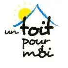
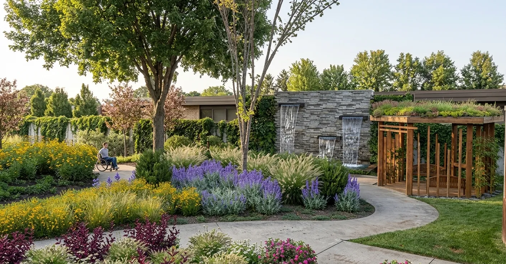
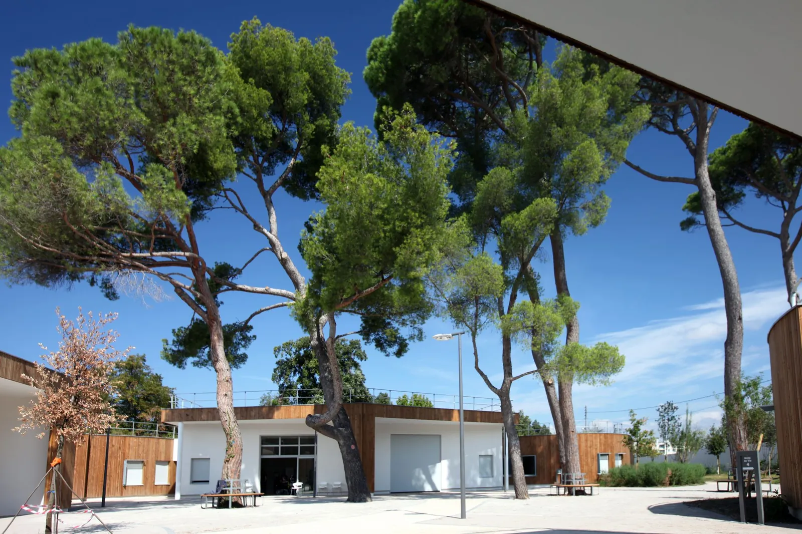

Notre histoire

Un Toit pour Moi Faire un don
Un jardin pensé pour les jeunes adultes de la MAS Un Toit pour Moi : sentir, toucher, écouter, profiter du soleil.
Que deviendront nos enfants quand ils seront grands ?
Tout est parti de cette inquiétude de parents. En 2005, nos jeunes, devenus adultes, restaient en établissement pour enfants, faute de mieux. Ce n'était pas une vie pour eux, ni un avenir. Alors nous avons créé Un Toit pour Moi, avec un rêve simple : leur offrir une vraie maison.
Ce rêve est devenu réalité : la MAS Un Toit pour Moi est aujourd'hui leur chez-eux.
Mais une maison, c'est aussi tous ces petits bonheurs qui font du bien :
Aujourd'hui, nous rêvons de leur offrir un jardin : sentir le parfum de la lavande, toucher les feuilles, écouter l'eau, profiter du soleil. Un jardin pensé pour eux, accessible à tous.
Ce jardin, nous ne pourrons pas le créer seuls. Aidez-nous à le faire pousser. 🌿
Je soutiens le jardin
Des allées accessibles, des plantes à sentir et à toucher, de l'eau, de l'ombre : voici le jardin que nous voulons créer. Au bout de la promenade, comparez avec les lieux tels qu'ils sont aujourd'hui : les arbres existants sont conservés, le jardin se construit autour d'eux. Cliquez sur une image pour l'agrandir.
Les dons passent par HelloAsso, une plateforme sécurisée et gratuite pour les associations : 100 % de votre don revient à l'association.
Faire un don sur HelloAsso